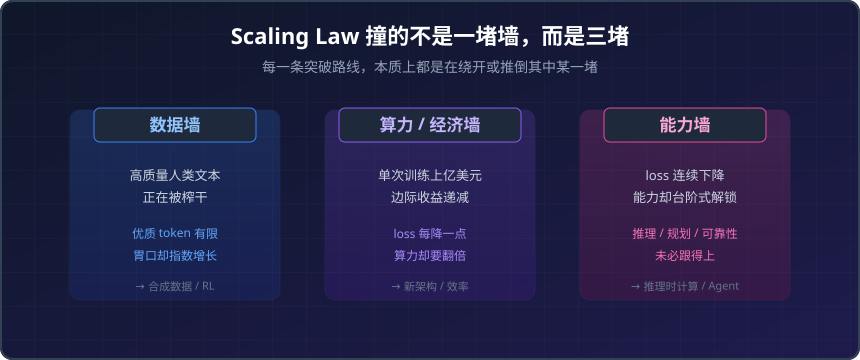
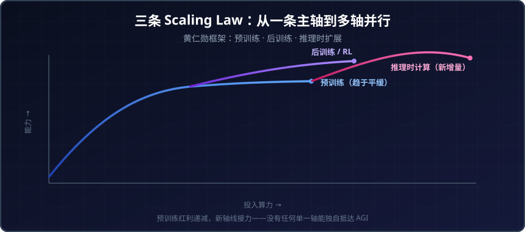
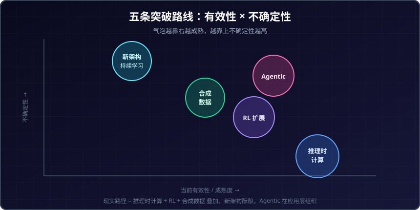

从 Scaling Law 瓶颈到 ASI：五种突破路线的有效性与未来展望
引子：当“大力出奇迹”开始失灵
2020 年，OpenAI 那篇 Scaling Laws 论文把大模型的发展从“炼丹”变成了“工程”：模型越大、数据越多、算力越足，loss 就会沿着一条干净的幂律曲线下降。这条信仰支撑了 GPT-4、Gemini Ultra 的诞生，也支撑了 2026 年全球将近 7000 亿美元 的 AI 基础设施投入。
但到了 2025—2026 年，越来越多的证据指向一个让人不安的事实：单纯堆预训练算力，回报正在快速递减。 一份发表在 arXiv 的研究直言，“预训练范式”可能正在撞墙，主要厂商纷纷转向推理时“思考”这类替代路径来提升能力。更扎心的是另一项元分析——下游任务真正符合线性 scaling law 的情况，只有 39%；预训练 loss 的每一点下降都越来越贵，而能力提升又并非 loss 的线性函数。
于是问题摆在所有人面前：如果“更大”不再自动等于“更强”，那通往 AGI（通用人工智能）乃至 ASI（超级人工智能）的路，到底该怎么走？
这篇文章不贩卖焦虑，也不灌鸡汤。我会把目前最被看好的五条突破路线逐一拆开，评估每一条的真实有效性、已知边界和未来展望，最后给你一张尽量清醒的判断地图。
一、先看清：我们撞的到底是哪堵墙
“Scaling Law 撞墙”是个被滥用的说法。准确地说，我们撞的不是一堵墙，而是三堵性质不同的墙。

▲ 三堵墙性质各异：数据墙是“没料可喂”，算力墙是“喂不起”，能力墙是“喂了也未必更强”。后文的五条路线，正是分别针对这三堵墙的解法。
- 数据墙：高质量人类文本正在被榨干。互联网上可用的优质 token 是有限的，而前沿模型的胃口在指数级增长。
- 算力/经济墙：单次训练动辄上亿美元，loss 每降低一点，所需算力却要翻倍。有研究者用微观经济模型证明，存在一个“scaling 不再经济”的临界点——继续堆下去，边际收益会被训练和推理成本吞掉。
- 能力墙：即使 loss 还在降，下游真实能力（推理、长程规划、可靠性）的提升也未必跟得上。loss 是连续的，能力却是台阶式解锁的。
理解这三堵墙很重要，因为接下来的五条路线，本质上就是在分别绕开或推倒其中某一堵。下面逐一来看。
二、路线一：推理时计算（Test-Time Compute）—— 当下最确定的增量
它在做什么
如果预训练这条轴走不动了，那就换一条轴。推理时计算的核心思想是：不在训练时一次性把智能“灌”进模型，而是在回答问题时让模型“多想一会儿”——通过更长的思维链、多次采样、自我验证与修正，把更多算力花在推理阶段。
NVIDIA 的黄仁勋把这件事提炼成了著名的“三条 Scaling Law”框架：预训练扩展、后训练扩展、以及推理时扩展。OpenAI 的 o 系列、DeepSeek R1 都是这条路线的代表产物——它们证明了一件事：给模型更多“思考预算”，它在数学、代码、推理任务上的表现会显著上升。

▲ 当预训练这条曲线趋于平缓，后训练（RL）和推理时计算两条新轴线接力上升。这正是 2025—2026 年前沿实验室算力分配重心转移的核心逻辑。
有效性评估
这是目前最被实证支持的一条路线。几个硬数据：
- 在数学证明任务上，采用群体级测试时扩展（population-level test-time scaling）的 MaxProof 系统，让模型在 IMO 2025 上达到 35/42、USAMO 2026 上达到 36/42，双双超过人类金牌线。
- 长上下文检索增强（RAG）场景中，当算力被最优分配时，增加推理计算带来的性能提升几乎是线性的。
边界与代价
但这条路也有明显的天花板：
- 成本随“思考”token 线性甚至超线性增长。一个回答想几万个 token，单次调用成本可能是普通回答的几十倍。
- 不是所有问题都值得“想这么久”。学界已经在研究“思考校准”（thought calibration）——动态判断何时可以停止思考，在分布内任务上能减少最多 60% 的思考 token 而几乎不损失性能。
如果你正在落地推理模型，关于成本与可靠性的更多坑，可以参考我们写过的 Agent 治理与可观测性的隐性成本。
未来展望
推理时计算几乎肯定会成为标配，但它更像是“把已有能力榨干”，而非“创造新能力”。它能让模型在可验证的任务（数学、代码、逻辑）上逼近上限，却难以独自解决开放世界中那些没有清晰奖励信号的问题。它是确定的增量，不是终局的答案。
三、路线二：强化学习扩展（RL Scaling）—— 新的主轴，但还缺地图
它在做什么
如果说推理时计算是“让模型多想”，那么 RL 扩展就是“教模型想得更对”。强化学习从一个边缘子领域，一跃成为夹在“聪明的基础模型”和“有用的产品”之间的关键一层。
Kimi K1.5、DeepSeek R1 这类工作证明了：通过强化学习，模型可以自己探索、靠奖励信号学习，从而突破“人类标注数据有限”的约束。Claude Opus 4.8 在 SWE-bench Pro 上拿到 69.2%、Terminal-Bench 2.1 上拿到 74.6%，RL 训练正是背后的主要推手之一。
有效性评估
RL 之所以让人兴奋，是因为它理论上打开了一条新的数据轴——模型不再依赖现成的人类文本，而是通过与环境交互、自我对弈来生成无限的训练信号。在有清晰奖励的领域（代码能否通过测试、数学证明是否成立），这条路已经被反复验证有效。
边界与代价
但 RL 目前最大的问题是：它还没有自己的 Scaling Law。
- 一篇 2025 年的研究坦言，RL 已成为训练 LLM 的核心，但这个领域缺乏像预训练那样可预测的扩展方法论——你很难提前知道，多花十倍 RL 算力会换来多少能力提升。
- 奖励设计极其脆弱。在没有客观对错的任务上（写作、对话、价值判断），奖励信号要么难以定义，要么容易被模型“钻空子”（reward hacking）。
- RL 训练的工程复杂度远高于预训练，trainer 与 generator 的吞吐匹配本身就是个难题。
未来展望
RL 扩展很可能是未来几年最重要的主轴，但它现在还处在“预训练 Scaling Law 出现之前”的阶段——有效，但缺乏可预测性。谁先把 RL 的 scaling 规律摸清楚、把奖励工程做扎实，谁就握住了下一阶段的主动权。
四、路线三：合成数据（Synthetic Data）—— 绕开数据墙的赌注
它在做什么
数据墙的直接解法，就是自己造数据。合成数据指的是用模型生成、再经过筛选和验证的训练数据，用以补充甚至替代日益枯竭的人类语料。
开源的 Webscale-RL 等数据合成 pipeline，通过数据过滤、领域分类、多角色分配和质量检查等步骤，试图在规模和多样性上都保持高保真度。在数据受限的世界里，“如何把算力高效转化为性能”本身已经成为一个独立的研究方向。
有效性评估
合成数据在特定、可验证的领域里已被证明可行——尤其是数学、代码这类有明确对错标准的场景，模型生成的数据可以被自动验证后再喂回训练。RL 与合成数据天然契合：模型自我对弈产生的轨迹，本身就是一种高价值合成数据。
边界与代价
风险也很真实：
- 模型崩溃（model collapse）：如果反复用模型生成的数据训练下一代模型，分布会逐渐收窄、多样性流失，最终“近亲繁殖”导致退化。
- 质量与多样性的权衡：合成数据容易在“安全区”内打转，难以覆盖真实世界的长尾与意外。
- 在没有客观验证手段的领域，合成数据的质量很难保证。
未来展望
合成数据不会是万能药，但会是RL 与推理时计算的关键燃料。它的价值高度依赖“能否被验证”——可验证领域（数学、代码、形式化推理）会大放异彩，开放领域则需要配合更聪明的过滤和人类监督。把它当成绕开数据墙的一座桥，而不是终点。
五、路线四：新架构与持续学习 —— 推倒 Transformer 这堵墙
它在做什么
前面三条路本质上都还在 Transformer 的框架内打补丁。第四条路更激进：换掉地基。
当前 Transformer 架构最大的软肋，是缺乏真正的记忆和“边用边学”的能力——每次对话结束，模型就“失忆”了，它的权重在部署后是冻结的。后 Transformer 的研究方向（如一些 neo-lab 提出的 BDH 等架构）正试图解决这个问题，主打真正的持续学习与长程推理，把“在线学习”作为通往 AGI 的核心能力。
有效性评估
学界普遍认同：记忆和即时学习能力，是当前基于 Transformer 的 AI 面临的最大单一限制。 持续学习与神经架构搜索的结合，被认为能催生更鲁棒、更具适应性的智能体。架构层面也有大量工作在做 scaling law 与架构的联合优化（稀疏化、混合注意力、状态空间模型等），试图在同等算力下榨出更高性能。
边界与代价
- 这是风险最高、最不确定的一条路。Transformer 之所以统治至今，正是因为它出奇地好扩展；任何替代架构都必须证明自己在大规模下同样甚至更能扩展，而这至今没有任何架构真正做到。
- 持续学习还面临“灾难性遗忘”这一老难题——学新知识时把旧知识冲掉了。
- 工程生态、硬件优化全都围绕 Transformer 构建，新架构的迁移成本极高。
未来展望
新架构是最高赔率的赌注：一旦某种具备原生持续学习能力的架构被证明可扩展，它可能直接重写游戏规则；但在那一天到来之前，它更多是研究前沿而非工程现实。值得密切关注，但不宜押上全部筹码。
六、路线五：Agentic AI 与多智能体涌现 —— 从“单一大脑”到“群体智能”
它在做什么
第五条路换了个层次思考问题：也许 AGI 根本不会来自单个无限大的模型，而是来自多个模型协作组成的系统。
有 arXiv 论文直接挑战“单一模型 scaling 就足以实现 AGI”的教条，论证 Agentic AI 是掌握真实世界复杂、异质任务分布的必经范式。这标志着一个转变：从无状态、被动应答的生成模型，走向能自主感知、规划、行动和适应的目标驱动系统。
DeepMind 在 2026 年发布的《From AGI to ASI》报告里，列出了从 AGI 通往 ASI 的四条潜在路径：扩展 AGI、AI 范式转移、递归式自我改进，以及从大规模多智能体集体中涌现 ASI。 多智能体涌现正是其中最具想象力的一条。
有效性评估
Agentic 方向已经从概念走向落地——工具使用、长程任务执行、多智能体协作都有实质进展。它的吸引力在于：不要求单点突破，而是用工程化的方式组合现有能力，去覆盖单个模型难以独自处理的复杂任务空间。
边界与代价
- 智能体系统的可靠性是个大问题：单个模型 95% 的准确率，串联十步之后可能只剩约 60%。错误会沿着链条累积放大。
- 治理、可观测性、成本控制都比单模型复杂一个数量级。我们在 企业 AI Agent 部署实战指南 和 从 LLM 到 Agent 的范式迁移 里都详细讨论过这些隐性成本。
- “涌现出 ASI”目前仍是理论推演，没有任何实证。
未来展望
Agentic AI 几乎确定是未来 AI 产品的主流形态，但“多智能体集体涌现出超级智能”更像是一个开放的研究假设，而非可规划的工程路线。它解决的是“如何把智能用起来”，而非“如何创造更高的智能”。
七、把五条路放在一起看：一张清醒的地图
把这五条路线对照三堵墙和成熟度，能看得更清楚：

▲ 把五条路线放进“有效性 × 不确定性”象限：推理时计算最确定但更像增量，新架构最不确定却赔率最高，RL 与 Agentic 处在主轴位置。没有任何单一气泡能独自抵达 AGI。
| 路线 | 主要绕开的墙 | 当前有效性 | 不确定性 | 角色定位 |
|---|---|---|---|---|
| 推理时计算 | 能力墙 | 高（已实证） | 低 | 确定的增量 |
| RL 扩展 | 数据墙、能力墙 | 中高 | 中（缺 scaling 规律） | 下一阶段主轴 |
| 合成数据 | 数据墙 | 中（限可验证领域） | 中高（模型崩溃风险） | 关键燃料 |
| 新架构/持续学习 | 算力墙、能力墙 | 低（研究前沿） | 极高 | 最高赔率赌注 |
| Agentic/多智能体 | 能力墙 | 中高（产品层） | 高（涌现仍是假设） | 智能的组织方式 |
几个值得记住的判断：
- 没有任何一条路线能单独把我们送到 AGI。 现实更可能是“推理时计算 + RL + 合成数据”在工程上叠加，新架构在背后慢慢酝酿，Agentic 在应用层把这些能力组织起来。
- “可验证性”是贯穿始终的胜负手。 凡是有清晰对错信号的领域（数学、代码、形式化推理），五条路线都跑得快；凡是开放、主观、无明确奖励的领域，进展都明显放缓。这恰恰提示了 AGI 真正的难点所在。
- AGI 时间表正在经历情绪过山车。 2025 年初 o1、o3 出现后，业界一度盛行“短时间表”乐观；但随后对预训练撞墙、RL 不可预测、下游 scaling 不可靠的认识，又给热情泼了冷水。清醒的态度是：能力在真实推进，但通往 AGI 的路比任何单一信仰都更曲折。
八、小结
Scaling Law 没有“死”，但它正在从一条主轴裂变成多条并行的轴。预训练的红利在递减，于是推理时计算补上了确定的增量，RL 扩展接过了新主轴的位置，合成数据为这两者提供燃料，新架构在地基层面酝酿可能改写规则的变革，而 Agentic AI 则在应用层把所有能力组织成可用的系统。
通往 AGI 乃至 ASI 的彼岸，大概率不是一次性的“某条 scaling 曲线冲到顶”，而是这几条路线长期协同、互相补位的结果。其中最关键的变量，是我们能否把“可验证”的边界一点点向开放世界推进——因为真正的通用智能，恰恰藏在那些没有标准答案的问题里。
保持关注，保持清醒，别被任何单一的“信仰”绑架。这或许是面对这场长跑，最务实的姿态。
免责声明
本文为行业观察与技术分析，所涉数据、基准成绩与研究结论均来自公开资料，可能随技术演进而变化。文中提及的模型、产品与时间表不构成任何投资建议或技术选型的最终依据，请读者结合自身场景独立判断、谨慎决策。
参考来源
- Governing AI Beyond the Pretraining Frontier - arXiv
- Scaling Laws Are Unreliable for Downstream Tasks - arXiv
- The Art of Scaling Reinforcement Learning Compute for LLMs - arXiv
- MaxProof: Scaling Mathematical Proof with Generative-Verifier RL and Population-Level Test-Time Scaling - Hugging Face
- Efficient and confident test-time scaling - arXiv
- Agentic AI System Is a Foreseeable Pathway to AGI - arXiv
- From AGI to ASI - Google DeepMind
- A theoretical framework for when scaling LLM training ceases to be profitable - Digg
- Will Bigger AI Models Always Win? (2026) - BuildFastWithAI
- Inside a Neolab: BDH and the Future of AI beyond the Transformer - Pathway
相关阅读
- 企业 AI Agent 部署实战指南 2026
- ChatGPT 已死？从 LLM 到 Agent 的范式迁移
- Agent 治理与可观测性的隐性成本
- 开源大模型选型对比 2026
- 大模型推理框架选型 2026
推荐搭配装备
善其事，利其器。以下硬件能最大化你的AI体验👇
🔗 通过以上链接购买可支持本站持续运营 🙏